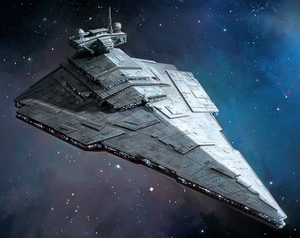
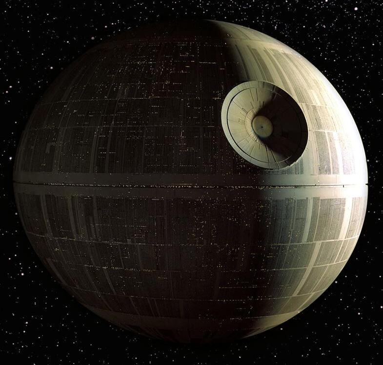

Космические летательные аппараты в кино
Энтерпрайз NCC-1701

Начать стоит с одной из самых популярных научно-фантастических франшиз – «Звездного пути». Разумеется, за многолетнюю историю сериалов и фильмов, вышедших под этим брендом, парк космических кораблей в ней неоднократно менялся, но даже далекие от звания «трекки» поклонники кино без труда вспомнят название самого известного звездолета «Звездного пути» – конечно же, это «Энтерпрайз». Знаменитый корабль, кстати, тоже пережил несколько модификаций, но для своего модельного ряда мы выбрали классический «Энтерпрайз NCC-1701» – он фигурирует, например, в перезагрузке франшизы.
Звездный разрушитель

Разумеется, рассказ о самых знаменитых звездолетах был бы неполным без упоминания «визитной карточки» Имперского флота из серии фильмов «Звездные войны». Франшиза может похвастать целой россыпью «треугольных» крейсеров, увидеть их можно в каждом из фильмов, а подлинный масштаб конструкции легко оценить по эпизодам из «Пробуждения силы», в которых герои проникают внутрь разрушенного корабля. Несмотря на то что формально «Звездные разрушители» представляют стан врагов, не восхищаться ими невозможно. Каждое появление подобного красавца в кадре неизменно хочется сопроводить аплодисментами.
ТЕТ

Оригинальные концепции сегодня в научной фантастике в дефиците, большинство сценариев крутится вокруг трех-пяти исхоженных вдоль и поперек сюжетов разной степени привлекательности. «Обливион» Джозефа Косински на этом фоне выглядел как минимум весьма выгодно со своей фальшивой постапокалиптической атмосферой, финальным клифхенгером и, разумеется, графикой. Даже после однократного просмотра вы никогда не забудете гигантские летающие фабрики клонов под названием ТЕТ, которые «прикидывались» станциями очистки природы от последствий войн. Идеальные перевернутые пирамиды завораживают взгляд, а их математически точное расположение над поверхностью Земли заставит обливаться слезами умиления вашего внутреннего перфекциониста.
Элизиум

Далеко не в одном научно-фантастическом фильме используется печальный сюжет о постепенном «умирании» Земли, о попытке человечества покинуть загрязненную, зараженную или изуродованную войнами планету. Авторы сайфай-триллера «Элизиум» предположили, что, прежде чем искать планету для колонизации, земляне попытаются перебраться на гигантскую космическую станцию, которая на длительное время заменит дом. Подобный проект и получил название Элизиум, правда, принять космическая станция смогла далеко не всех, а только самых богатых. Остальные на Земле должны влачить жалкое существование, изредка любуясь пролетающим в вышине недоступным серебряным тором, населенным избранными.
Звезда смерти

Незаменимая станция, если вы уже захватили Землю и теперь подумываете о захвате Вселенной. В диаметре ширина «Звезды Смерти» – около 900 км, станция оснащена двумя гиперпространственными двигателями, помимо центрального сверхмощного лазера, который способен уничтожать целые планеты, на «Звезде Смерти» также имеются восемь лазеров поменьше, тысячи самых разных пушек (от ионных до лазерных) и прочих военных примочек. Возможность размещения до 50 тыс. космических кораблей на борту – от танков до истребителей. Экипаж – более 8 млн человек. Защищена мощным силовым полем, питающимся от генератора. Комментарии, как говорится, излишни – как Империя проворонила Вселенную, имея на руках такой козырь, непонятно.
Сокол тысячелетия

Старая, но неустаревающая классика от режиссера Джорджа Лукаса, сконструировавшего «Тысячелетнего Сокола» из обкусанного гамбургера и оливки, прилаженной сбоку. Когда-то Хан Соло выиграл «Сокола», играя в карты, немножко допилил полученную колымагу по мелочам (пушки, вентиляция и т.д.), приладил гиперпривод для прыжков по Вселенной (чтобы скрываться ото всех, кому он должен). В итоге получился один из самых быстрых кораблей во всех вместе взятых галактиках (скорость 5 световых лет в час), но и один из самых небезопасных – в 4 - 6 эпизодах «Звездных войн» «Сокол» чаще ломался, чем летал. Однако, как наглядно продемонстрировал Чубакка в «Возвращении джедая», гиперпривод чинится точным ударом гаечного ключа по приборной панели – главное, чтобы со всей Силы. При необходимости можно сконцентрироваться и врезать еще раз – так уж наверняка и надолго. Экипаж – до 6 человек. Очень много места для контрабанды. Удобно будет использовать после завоевания Вселенной – и приторговывать, и держать ухо востро с повстанцами.
Пепелац

фантастический летательный аппарат, созданный художником Теодором Тэжиком для кинофильма «Кин-дза-дза!». Слово «пепелац» часто используется в русской разговорной речи: например, многие употребляют это слово, ласково (гордо) обозначая свой автомобиль. Иногда словом «пепелац» называют также летательные аппараты — вертолёты, самолёты малой авиации и тому подобное. Задолго до выхода фильма «Кин-дза-дза!» главный герой фильма «Мимино» по-грузински называет свой вертолёт пе́пела — бабочка (режиссёр обоих фильмов — Георгий Данелия).
Пегас

Легендарный корабль, который хоть и выглядит как юла с ножками, но по части функционала и пережитых приключений заткнет за астероидный пояс всех в этом списке. Вдохновленный книгой Кира Булычева «Алиса и три капитана», «Пегас» был сконструирован режиссером Романом Качановым в 1981 году. Только за 50 минут действия мультфильма со своим экипажем из 3-х человек побывал на планетах Блук, Шелезяка и на Третьей планете системы «Медуза», где в итоге был раскрыт коварный заговор межгалактических преступников во главе с Весельчаком.